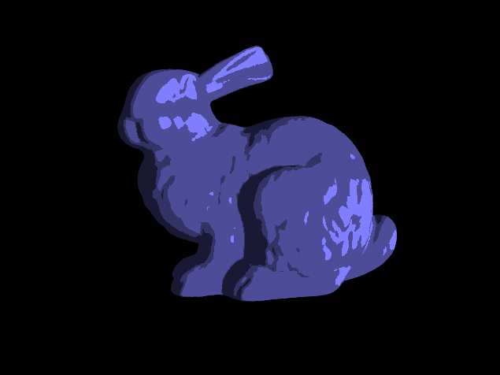
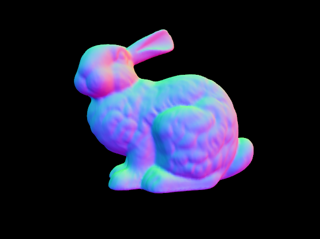

5/31/2018 - milestone
For this milestone, we have decided to work on project 1.2 (basic high quality rendering).
So far, we have worked on part 1.2.1, in which we have gotten our GLSL shading to work. To start, we modified our code from project 2 which parses an OFF file and renders
the model with basic directional lighting. In addition, we have added 3 different shadings. We have normal lighting, toon shading, and normal coloring. Finally, we have kept our keyboard
controls from the last assignment to be able to easily manipulate the model and view it from different angles.
bunny with toon shading

bunny with normal coloring

Final Report Proposal
For the remaining parts of the assignment, we plan on finishing shadow mapping, environment mapping, and at least two add ons. For the add ons, we are thinking about either adding on to
environment mapping/shadow mapping, or implementing some other techniques that we learned about in CSE 167. We were also interested in image-based lighting from option 1.1 on the final project PDF.
Here are a few add on ideas that we have been consider implementing:
- Environment mapping + diffuse/Phong Shading
- Soft Shadows
- Perspective Shadow mapping
- Image-Based Lighting
- Screen space ambient occlusion : approximating ambient occlusion in real time
- Shadow Volumes : another technique to add shadows to a scene, we would compare/contrast this with shadow mapping
Any combination of these techniques should result in a high-quality real-time rendering demo.